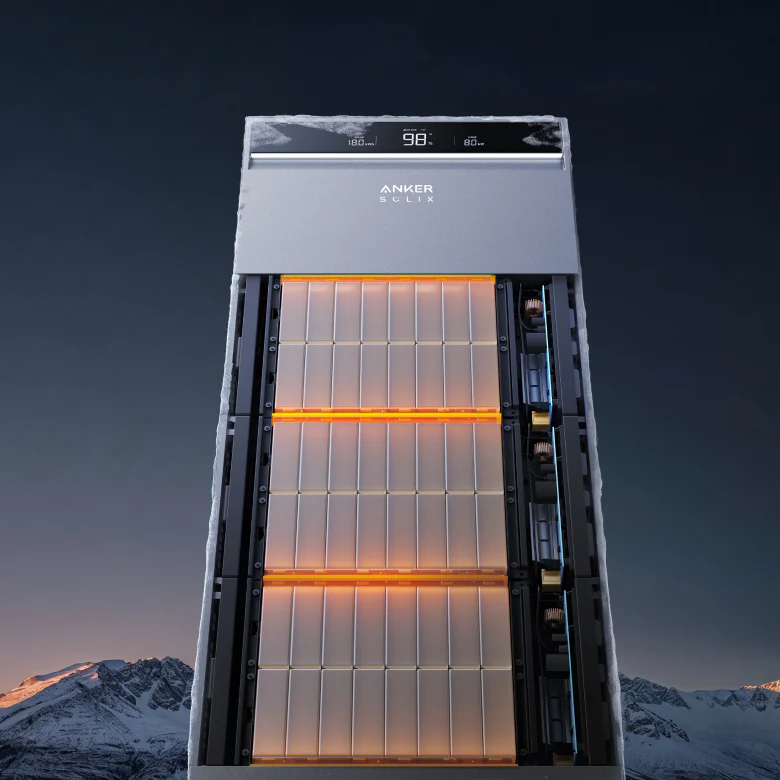
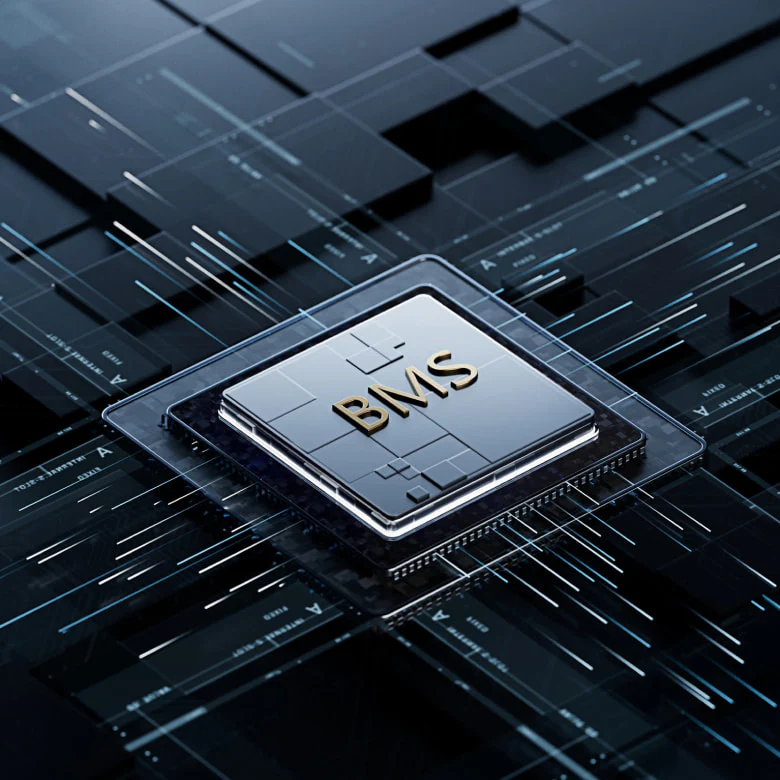

Extreme Performance at Frigid -20°C
X1 solves battery power challenges during freezing weather. Thermal boosting kicks in at 0°C and keeps the battery operating at -20°C.
X1 is ultra-thin, thanks to its all-in-one design that combines battery and power modules.
Install it
almost anywhere around your home.
.png)
Outages can be particularly brutal in the winter and summer. X1 is equipped to endure the
extreme chill
and heat with its superior build for peak performance.
X1 solves battery power challenges during freezing weather. Thermal boosting kicks in at 0°C and keeps the battery operating at -20°C.
Most energy storage systems suffer from power output drops when the temperature rises. Not X1. It maintains unparalleled strength even at 55°C thanks to its modular design and cooling system.
The die-cast body creates an IP65-rated seal that makes X1 dust- and water-resistant. C5 corrosion protection enables exposure to high humidity, saltwater spray, and other corrosive substances. It's also protected with our 10-year warranty.

Normal LiFePO4 batteries find it hard to
recharge below 0°C. X1 has a
built-in
thermal controller that auto-heats it to
20°C for top performance.

Overcome smaller capacities in below-
freezing temperatures with Anker's
Battery
Management System. Attainable
energy is increased by 15% at -20°C with
the
battery discharging 80% SOC from
67% SOC.